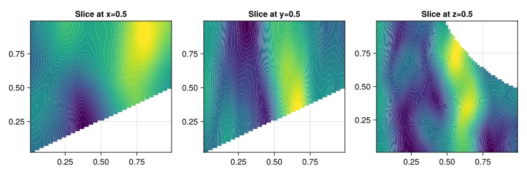

RandomFields
A Julia package for generating Gaussian Markov random fields with Matérn covariance functions on Oceananigans grids using the stochastic partial differential equation (SPDE) approach of Lindgren, Rue and Lindström (2011).
Background
Random fields are generated by solving a SPDE of the form
\[(1 - \lambda^2 \nabla^2)^{\frac{\alpha}{2}} F(s) = \tau \mathcal{W}(s)\]
where $F$ is the field being solved for, $\mathcal{W}$ a spatial white noise process, $\tau$ an output scale parameter, $\lambda$ a length-scale parameter and $\alpha = \nu + \frac{d}{2}$ a parameter controlling the differentiability of the field where $\nu$ is the smoothness parameter of the Matérn covariance and $d$ is the spatial dimension.
Features
The package currently supports both isotropic and anisotropic Matérn covariance functions, for the latter specifically for the case with per-dimension length scales. Fields can be generated on either of Oceananigans RectilinearGrid or LatitudeLongitudeGrid grid types or ImmersedBoundaryGrid with one of these as the underlying grid type, and fields with arbitrary Face / Center locations are supported. The isotropic and anisotropic variants of the linear operators in the SPDE are implemented as KernelAbstractions kernel functions to allow efficient execution on both CPU and GPU architectures.
Example
The below example illustrates generating a Gaussian random field with an anisotropic Matérn covariance function on an Oceananigans immersed boundary grid:
using Oceananigans
using RandomFields
using Random
using CairoMakie
underlying_grid = RectilinearGrid(
CPU(),
size=(64, 64, 64),
x=(0, 1), y=(0, 1), z=(0, 1),
topology=(Bounded, Bounded, Bounded),
halo=(2, 2, 2)
)
grid = ImmersedBoundaryGrid(
underlying_grid,
GridFittedBottom((x, y) -> x * y),
active_cells_map=true
)
field = CenterField(grid)
parameters = AnisotropicMatern(
length_scale=(grid.Lx / 16, grid.Ly / 8, grid.Lz / 4),
output_scale=1.0,
smoothness=2.5
)
generator = RandomFieldGenerator(field, parameters)
rng = Xoshiro(1234)
noise = randn(rng, size(field))
generate!(field, generator, noise)
field64×64×64 Field{Oceananigans.Grids.Center, Oceananigans.Grids.Center, Oceananigans.Grids.Center} on Oceananigans.ImmersedBoundaries.ImmersedBoundaryGrid on CPU
├── grid: 64×64×64 ImmersedBoundaryGrid{Float64, Oceananigans.Grids.Bounded, Oceananigans.Grids.Bounded, Oceananigans.Grids.Bounded} on CPU with 2×2×2 halo
├── boundary conditions: FieldBoundaryConditions
│ └── west: ZeroFlux, east: ZeroFlux, south: ZeroFlux, north: ZeroFlux, bottom: ZeroFlux, top: ZeroFlux, immersed: ZeroFlux
└── data: 68×68×68 OffsetArray(::Array{Float64, 3}, -1:66, -1:66, -1:66) with eltype Float64 with indices -1:66×-1:66×-1:66
└── max=6.86849, min=-3.43133, mean=0.807905We can visualize slices of the generated field using CairoMakie
using CairoMakie
field_slices = [
"Slice at x=0.5" => view(field, grid.Nx // 2, :, :),
"Slice at y=0.5" => view(field, :, grid.Ny // 2, :),
"Slice at z=0.5" => view(field, :, :, grid.Nz // 2),
]
fig = Figure(size=(900, 300), fontsize=14)
for (i, (label, field_slice)) in enumerate(field_slices)
ax = Axis(fig[1, i], title=label)
contourf!(ax, field_slice, levels=50)
end
resize_to_layout!(fig)
API reference
Reference documentation for the package's public and internal interfaces are linked to below